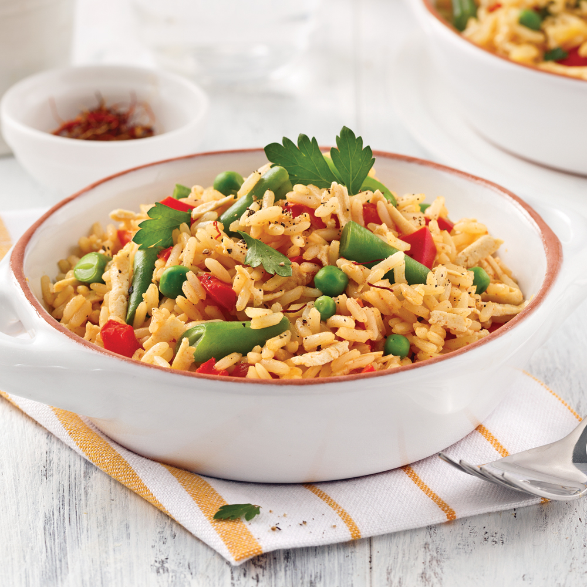

Paëlla végane

Ingrédients
- 625 ml (2 1/2 tasses) de bouillon de légumes
- 1 pincée de safran
- 2,5 ml (1/2 c. à thé) de paprika
- 1,25 ml (1/4 de c. à thé) de piment de Cayenne
<1i>5 ml (1 c. à thé) d’huile d’olive
- 1 gousse d’ail entière pelée
- 1/2 poivron rouge coupé en dés
- 1 tomate coupée en dés
- 330 ml (1 1/3 tasse) de riz blanc à grains longs
- 125 ml (1/2 tasse) de haricots verts coupés en tronçons
- 125 ml (1/2 tasse) de pois verts surgelés
- Sel et poivre au goût
- 310 ml (1 1/4 tasse) de tofu ferme râpé
Etapes
- Dans une casserole, porter à ébullition le bouillon de légumes avec le safran. Retirer du feu, puis ajouter le paprika et le piment de Cayenne. Couvrir et laisser infuser 5 minutes.
- Dans une poêle, chauffer l’huile à feu moyen. Cuire la gousse d’ail quelques secondes, jusqu’à ce qu’elle commence à dorer. Retirer la gousse d’ail de la poêle.
- Dans la même poêle, cuire les dés de poivron et de tomate à feu moyen 5 minutes.
- Ajouter le riz et bien mélanger. Cuire 10 secondes.
- Ajouter les haricots et les pois verts. Remuer. Verser le bouillon de légumes infusé. Saler et poivrer. Porter à ébullition.
- Couvrir et cuire 20 minutes à feu doux, jusqu’à ce que le riz soit al dente.
- Ajouter le tofu râpé et remuer. Rectifier l’assaisonnement au besoin.